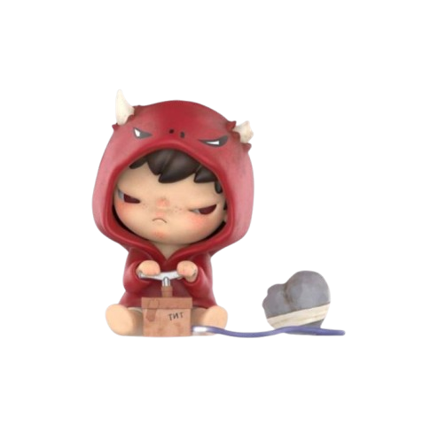
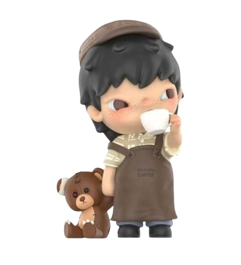
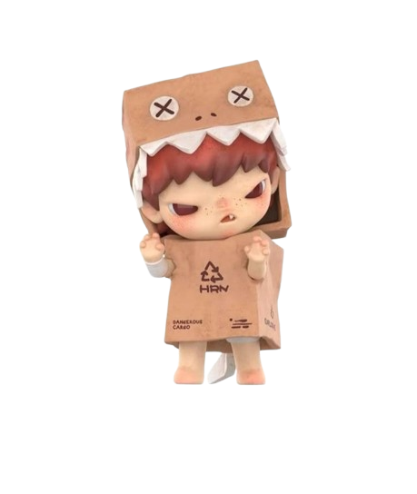
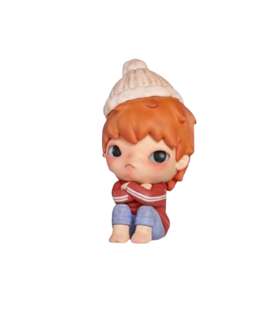

aliran magenta di hari ulang tahun
Happy Birthday
Orang Terfavoritku
Di antara semua hal yang ingin aku rayakan hari ini,
yang paling ingin aku
rayakan adalah keberadaanmu.
Karena dunia mungkin melihatmu sebagai seseorang yang kuat.
Tapi
aku melihatmu sebagai seseorang yang tetap berjalan bahkan ketika lelah.
Seseorang yang tetap
tersenyum meski sedang memikul banyak hal.
Dan seseorang yang, tanpa sadar, berhasil menjadi salah
satu bagian paling berharga dalam hariku.
Hal-Hal yang Aku Kagumi
Darimu
Doa-Doa Magenta
Untukmu





✦ ketuk makhluk laut untuk melihat pesan rahasianya ✦
Top 3 Lagu
Untukmu
Surat Untukmu
Selamat bertambah usia, Rahim.
Kamu telah menjalani satu tahun yang luar biasa hebat. Hari ini, tepatnya tanggal 1 Juli, aku ingin menjadi salah satu orang yang merayakan kelahiranmu. Sama seperti mentari yang tersenyum indah saat tawa pertamamu bergema. Sama seperti semilir angin yang tenang, yang mengiringi rasa syukur atas kehadiranmu di dunia. Aku ingin menjadi salah satu untaian doa penuh harapan di sepertiga malam, yang terus melangit bersama doa-doa tulus dari orang-orang terkasihmu.
Di usiamu yang menginjak usia 22 tahun ini, aku berharap kamu masih ingat untuk sesekali beristirahat. Beristirahat dari dunia yang berisik, dari rumah yang keras, dan dari pekerjaanmu. Sesekali, peluk dan sayangilah dirimu. Kamu tumbuh terlalu kuat melebihi kebanyakan manusia, hingga tanpa sadar terpatah-patah tulangmu berusaha membuat segalanya terlihat baik-baik saja. Kamu adalah manusia biasa, Ahim. Kamu berhak gagal, berhak kecewa, berhak lelah, dan kamu berhak beristirahat.
Dalam lembaran baru hidupmu, aku berharap jalanmu yang terjal mulai ditumbuhi bunga. Aku berharap keberuntungan, kebahagiaan, dan berkah dari Allah selalu merengkuh erat ragamu, bahkan ketika kamu jatuh terperosok ke dalam lubang hitam yang tak terjamah sinar mentari. Semoga senyummu tulus, bukan sekadar formalitas, namun muncul di saat dunia terasa ringan. Semoga tawamu terdengar lebih riang dan lepas. Semoga hari-hari berat segera berlalu dan berganti dengan kebahagiaan tanpa batas.
Terima kasih banyak, Ahim, atas kelahiranmu di tanah Ibu Pertiwi. Terima kasih banyak atas ketegaranmu hingga saat ini. Terima kasih banyak karena terus bangkit dari patah hati yang tak terkatakan. Tolong tetaplah melangkah bahkan ketika kamu tidak punya alasan untuk terus berjalan. Tolong tetaplah bertahan bahkan ketika kamu merasa muak menjadi manusia. Tolong tetaplah kuat dan istikamah sampai Allah berkata "Waktunya pulang".
Jika kamu lelah, gagal, atau kecewa, jangan malu untuk menangis, jangan takut untuk bercerita pada orang yang kamu percaya, dan jangan ragu untuk meminta bantuan dari orang yang kamu kasihi. Mohon maaf atas hadiahku yang mungkin tidak seberapa ini. Mohon maaf atas sifat kekanak-kanakanku yang telah menyulitkan harimu.
Barakallahu fii umrik, Ahim.
Kamu Dicintai
Lebih dari yang Kamu Sadari
Kamu Dicintai Lebih dari yang Kamu Sadari Mungkin kamu tidak selalu melihatnya. Mungkin kamu terlalu sibuk menjaga orang lain sampai lupa melihat dirimu sendiri. Tapi ada orang-orang yang bahagia karena kamu ada. Ada orang-orang yang tersenyum ketika namamu muncul di layar mereka. Ada orang-orang yang diam-diam bersyukur karena dipertemukan denganmu. Aku salah satunya. Selamat ulang tahun, Ahim. Terima kasih sudah bertahan sejauh ini. Dan terima kasih karena, tanpa sadar, kamu sudah menjadi salah satu bagian paling hangat dari hari-hariku. 🤍